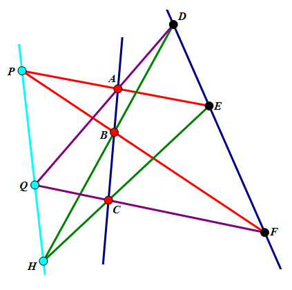
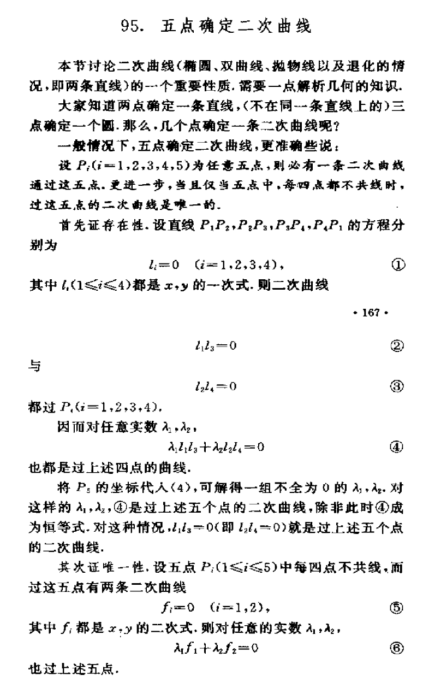
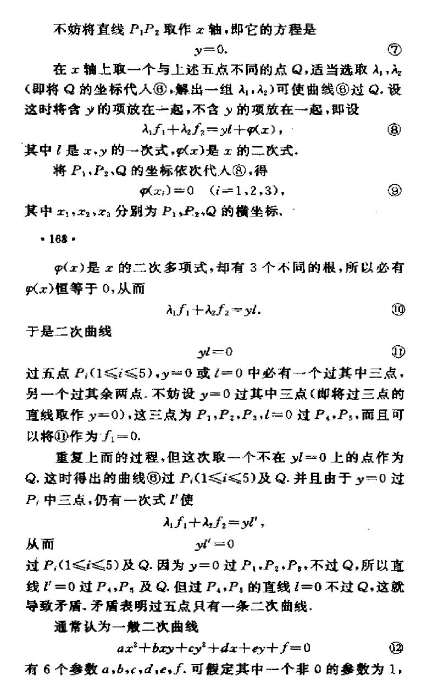
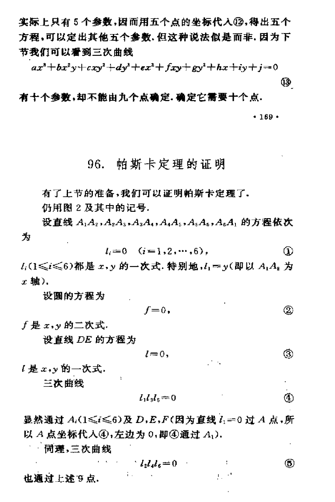
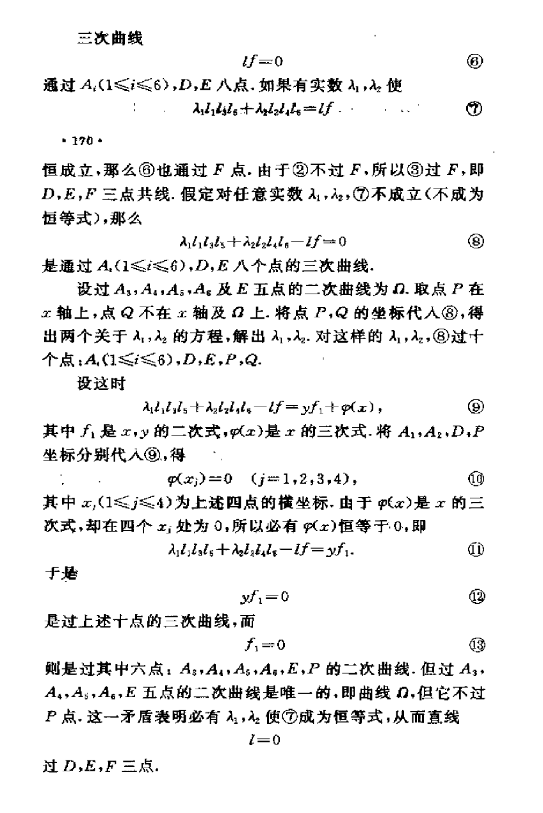
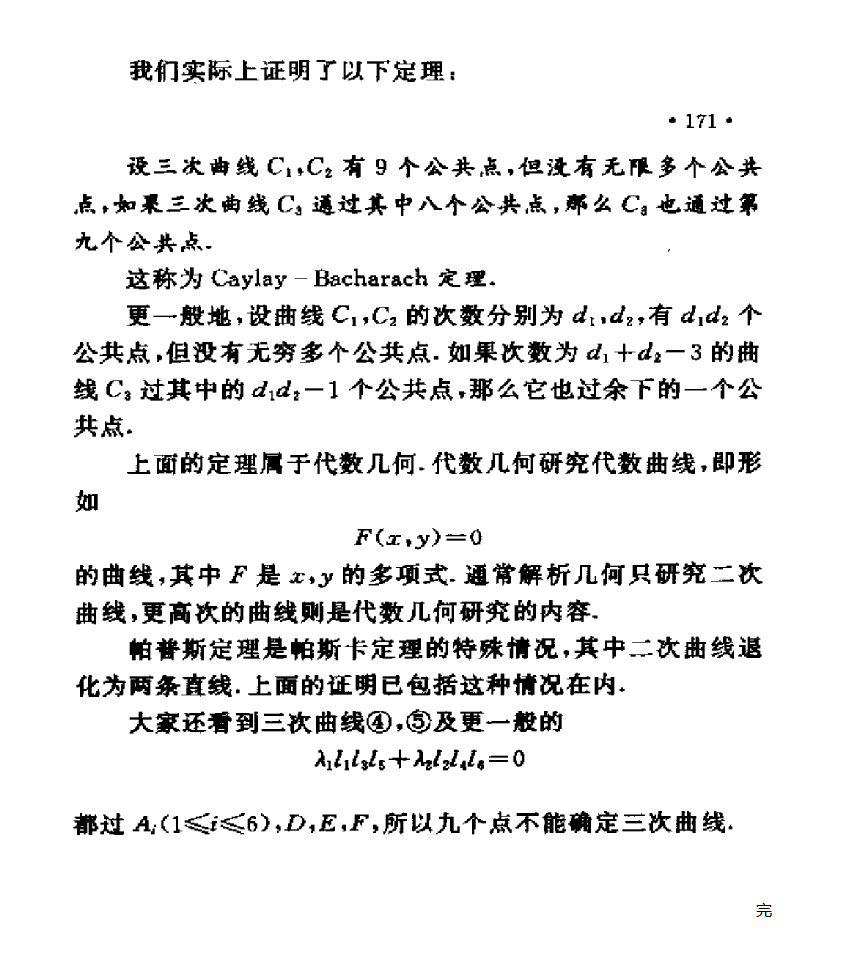

悠闲数学娱乐论坛
»
初等数学讨论
» 不平行，不平行，还是不平行
返回列表
isea
isea
当前在线
UID
5
帖子
753
精华
0
积分
4258
威望
1
阅读权限
90
在线时间
393 小时
注册时间
2011-9-25
最后登录
2013-6-6
web
论坛元老
UID
5
帖子
753
1
#
发表于 2013-1-4 11:36
[几何] 不平行，不平行，还是不平行
本帖最后由 isea 于 2013-1-4 11:47 编辑
《平行，平行，还是平行》
中，即，如图
若将平行看作在无穷远点相交，则，将平行改成相交，有，如图

(20.51 KB)
2013-1-4 11:36
那么，$P，Q，R$三点将共线！对，就是这样。
若将$P，Q，R$与$A，B，C$字母互换，便是大名鼎鼎的
帕斯卡（Pascal）定理
，（即，圆锥曲线的内接六边形其三条对边的交点共线，）二次曲线退化成直线的特殊情形。
难怪，在平面几何变换与几何证题里等，这类竞赛书中，直接拿用的。
退化后，就是上图，也有个名字，叫：帕普斯定理，具体：
http://zh.wikipedia.org/wiki/帕普斯定理
http://zh.wikipedia.org/wiki/帕斯卡定理
角度不同，境界完全不同。
本主题由 kuing 于 2013-1-19 15:02 分类
isea
isea
当前在线
UID
5
帖子
753
精华
0
积分
4258
威望
1
阅读权限
90
在线时间
393 小时
注册时间
2011-9-25
最后登录
2013-6-6
web
论坛元老
UID
5
帖子
753
2
#
发表于 2013-1-4 20:59
本帖最后由 isea 于 2013-1-4 21:08 编辑
一是为了完整性，二是，我多时候见到的证明都是圆或者是两直线，很少见到统一证明的。
这里把单墫在平面几何小花中给出的证明帖出来。

(100.69 KB)
2013-1-4 20:59

(114.32 KB)
2013-1-4 21:01

(88.68 KB)
2013-1-4 21:08

(107.47 KB)
2013-1-4 21:08

(79.02 KB)
2013-1-4 21:08
返回列表
 发表于 2013-1-4 11:36
发表于 2013-1-4 11:36